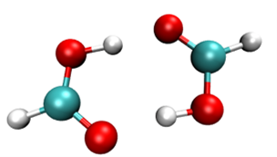
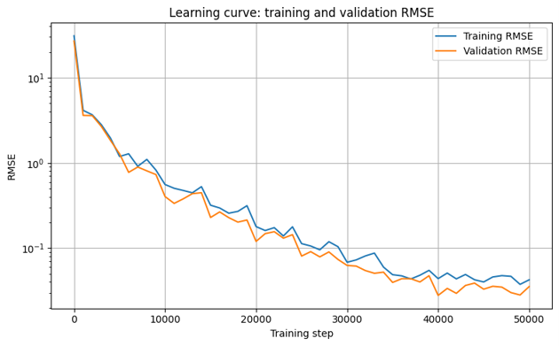
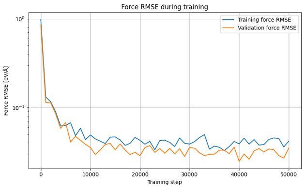
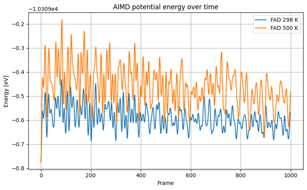
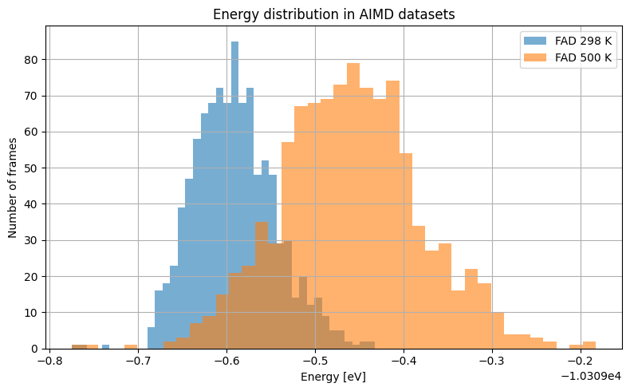
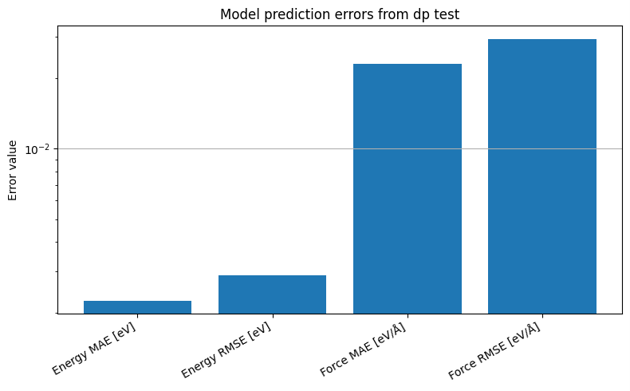
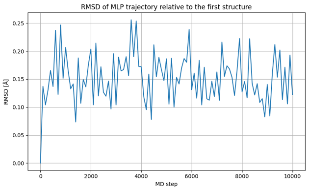

Prepare reference data
Use AIMD trajectories at 500 K and 298 K as training and validation datasets.
Project 02 · Machine learning potential
Student computational chemistry project focused on training a DeePMD-kit neural network potential for the formic acid dimer and using it in a LAMMPS molecular dynamics simulation.
The workflow connects ORCA AIMD reference data, Python preprocessing, DeepMD model training, quantitative testing and molecular dynamics deployment.

Project aim
The main goal was to build a reproducible workflow: convert ORCA trajectories into DeepMD format, train a neural network potential, test its accuracy and check whether the compressed model can run a stable LAMMPS simulation of the formic acid dimer.
Use AIMD trajectories at 500 K and 298 K as training and validation datasets.
Use local atomic environments and energy-force loss terms to learn the potential energy surface.
Deploy the compressed model in LAMMPS and evaluate the stability of the generated trajectory.
Methodology
Reference configurations came from ORCA ab initio molecular dynamics at two temperatures.
Python scripts converted XYZ trajectories, energies and forces into DeepMD folders.
The se_e2_a descriptor and a fitting network were used to learn energies and forces.
The compressed graph was tested on the independent 298 K validation set.
LAMMPS output was analyzed with Python to inspect stability, temperature, energy and RMSD.
Technologies
This project combines molecular simulation software with Python-based preprocessing, numerical analysis and scientific visualization.
Used for parsing XYZ files, creating DeepMD folders, analyzing logs and generating plots.
Used for coordinate arrays, energy arrays, force arrays and RMSD calculations.
Used for reading LAMMPS output tables and saving analysis results as CSV files.
Used to plot learning curves, energy distributions, error metrics and RMSD.
Source of the AIMD trajectories used as reference data for the model.
Used to train, freeze, compress and test the machine learning interatomic potential.
Used to run molecular dynamics with the compressed DeepMD model.
Useful for reading molecular structures and preparing simulation input files.
Used during exploratory development, debugging and plotting.
Used for command-line execution of DeepMD and LAMMPS workflows.
Model setup
The model used a smooth-edition two-body descriptor and was trained on the 500 K trajectory, while the 298 K trajectory was kept as an independent validation and testing set.
Smooth-edition two-body descriptor.
Local environment cutoff radius.
Optimization with exponentially decreasing learning rate.
500 K for training, 298 K for validation and testing.
Results
The plots below summarize convergence, force accuracy, AIMD energy coverage, test-set errors and the stability of the LAMMPS trajectory.






Key findings
Training and validation errors decreased together, and the validation curve remained close to the training curve.
It sampled a wider region of the potential energy surface, while 298 K provided a lower-temperature validation test.
The model reached 2.25 meV energy MAE, 2.89 meV energy RMSE, 23 meV/Å force MAE and 29 meV/Å force RMSE.
RMSD stayed below approximately 0.26 Å during the 10,000-step LAMMPS simulation at 298 K.
Repository
The notebook can stay in the repository as documentation, but the main portfolio version should use cleaned scripts. This makes the project easier to read, reproduce and present on GitHub.
formic-acid-mlp/
├── index.html
├── formic.css
├── README.md
├── requirements.txt
├── environment.yml
├── reports/
│ └── formic_acid_288684.pdf
├── figures/
│ ├── formic-acid-dimer.png
│ ├── learning-curve-rmse.png
│ ├── force-rmse-training.png
│ ├── aimd-energy-over-time.png
│ ├── aimd-relative-energy.png
│ ├── energy-distribution-aimd.png
│ ├── dp-test-error-metrics.png
│ └── rmsd-mlp-trajectory.png
├── notebooks/
│ └── task_2_ML.ipynb
├── scripts/
│ ├── 01_convert_orca_aimd_to_deepmd.py
│ ├── 02_make_deepmd_input.py
│ ├── 03_prepare_lammps_run.py
│ ├── 04_plot_training_and_test_results.py
│ └── 05_analyze_lammps_trajectory.py
├── data/
│ ├── raw/
│ │ ├── trajectory_298.xyz
│ │ └── trajectory_500.xyz
│ └── deepmd/
│ ├── FAD_298/
│ └── FAD_500/
├── models/
│ ├── graph.pb
│ └── graph-compress.pb
└── lammps/
├── in.lammps
├── conf.lmp
└── fad_mlp.dump
Do not upload very large raw trajectories, numpy datasets or model checkpoints directly to GitHub. For large files use Git LFS, a release asset or an external data link. Keep the repository focused on code, final figures, the report and small representative inputs.
Python scripts
The original notebook is useful for showing the development process, but the scripts below are better for a portfolio repository.
Parses ORCA AIMD XYZ trajectories and force files, converts Hartree units to eV and writes DeepMD numpy folders.
Creates the input.json file with descriptor, fitting network, learning rate and loss settings.
Creates conf.lmp and in.lammps for an NVT simulation using graph-compress.pb.
Plots learning curves, energy traces, energy histograms and dp test error metrics.
Reads LAMMPS logs and dump files, calculates RMSD and saves trajectory analysis figures.
Quick metrics
These small cards make the most important numerical results visible without opening the full report.
Hover to view context
Hover to view context
Hover to view context
Challenges
ORCA trajectories had to be converted into the specific folder and array format expected by DeepMD.
DeepMD-kit, TensorFlow and LAMMPS needed compatible versions, especially in a Colab-based workflow.
The model was not only tested numerically, but also checked through LAMMPS trajectory stability.
What I learned